Example 3D Assets I've Made in Blender
Low Poly Game Art
Alien Treehouse
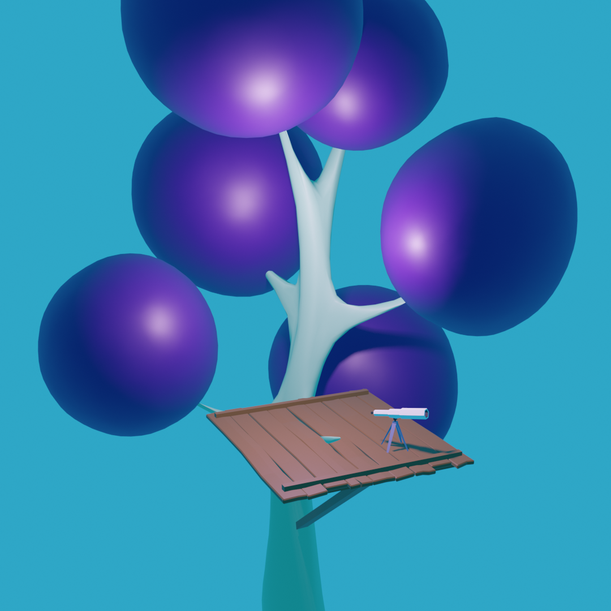
Alien Plant
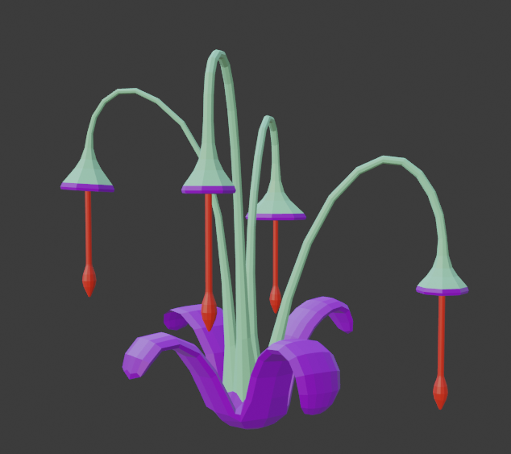
Player
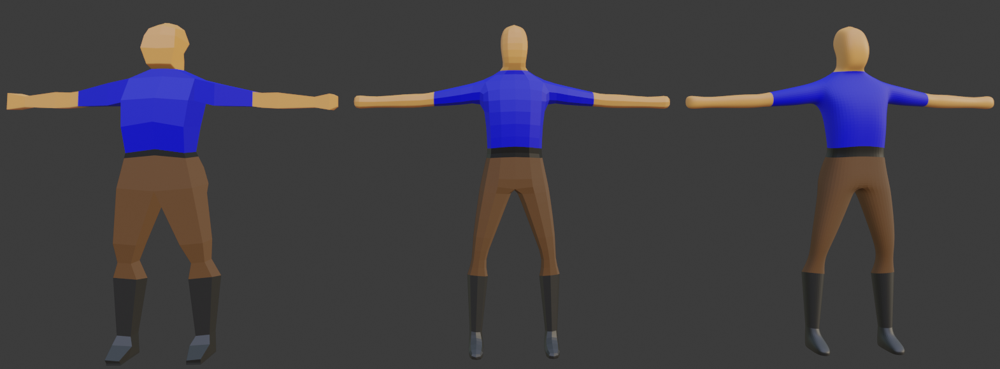
Player in Scene
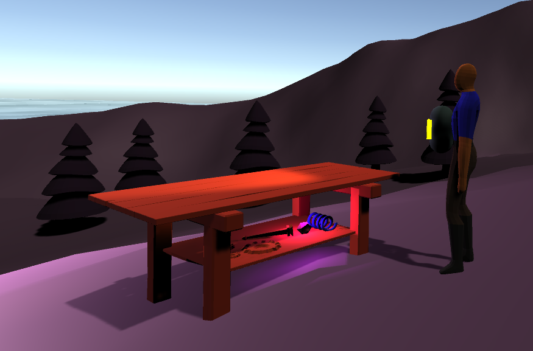
Creature
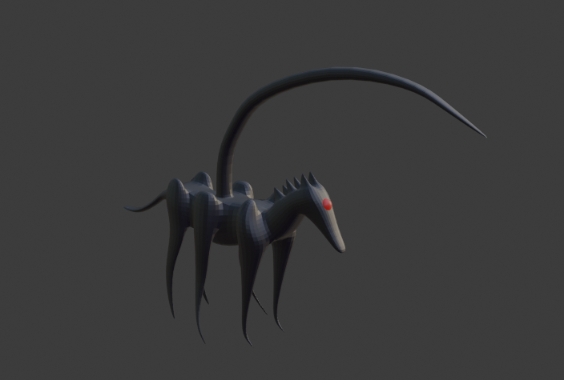
Unity Prefab
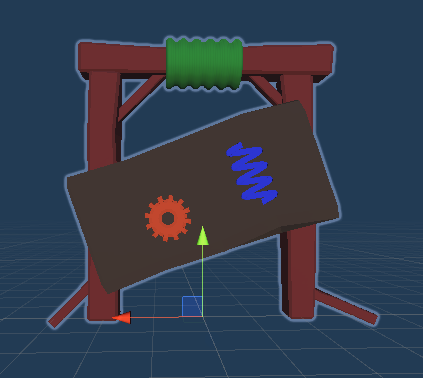
Helicopter
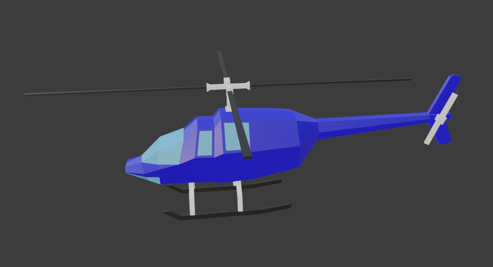
In-game Resources
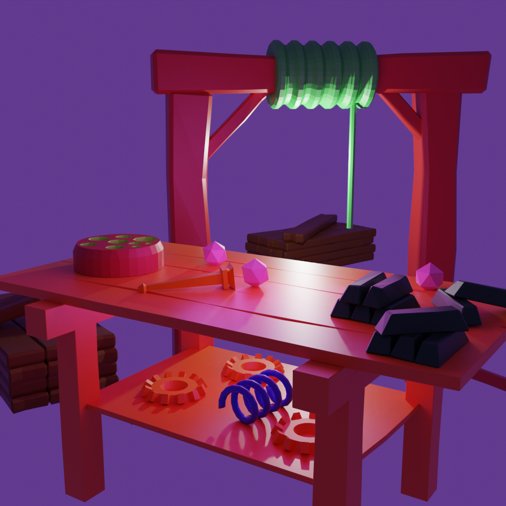
Icons for in-game Resources
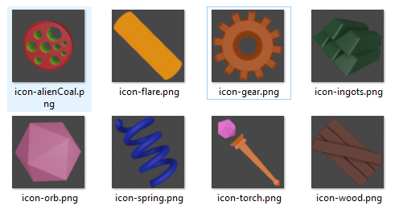
From Tutorials
Donut scene made while following a Blender Guru Tutorial series
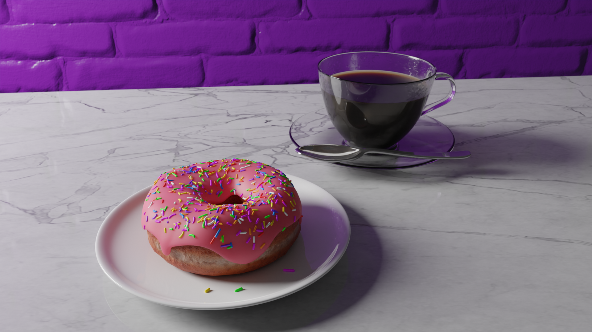
Well made while following a tutoiral series by Grant Abbitt
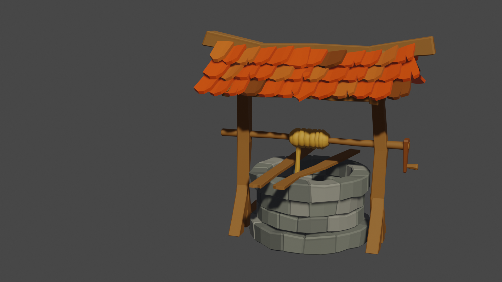
Interior Architecture
Living Room
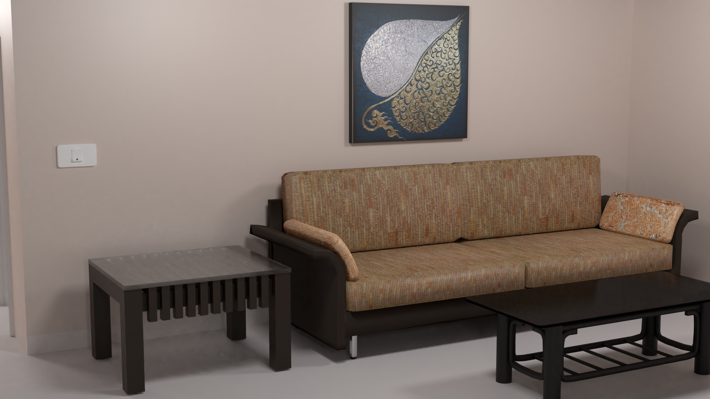
AC over Backdoor
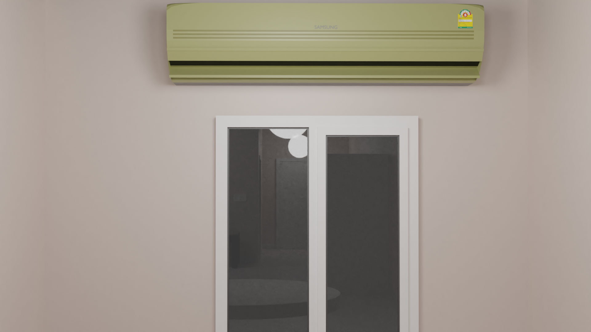
Condo model
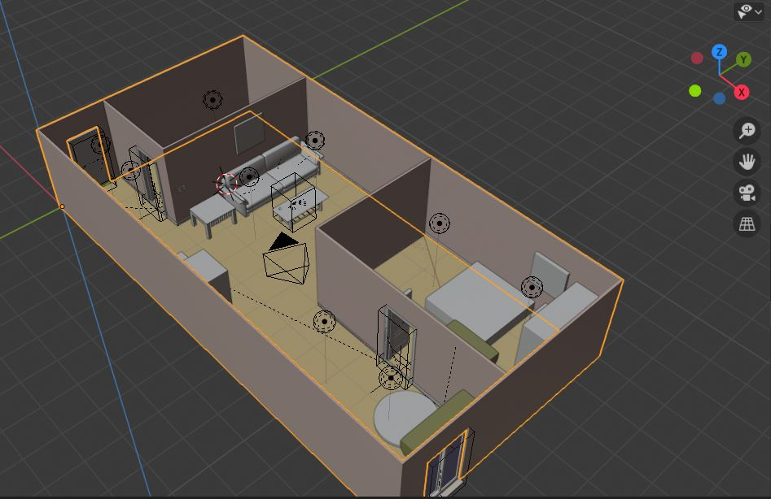